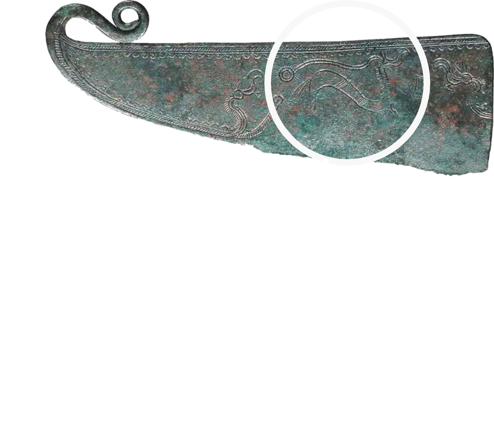
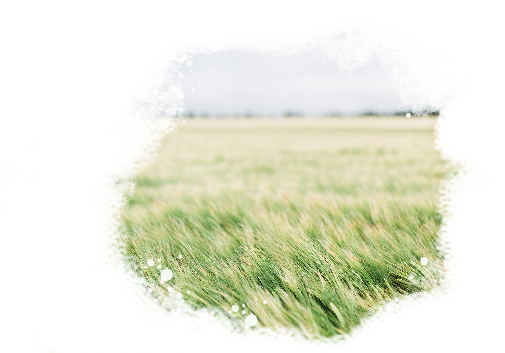
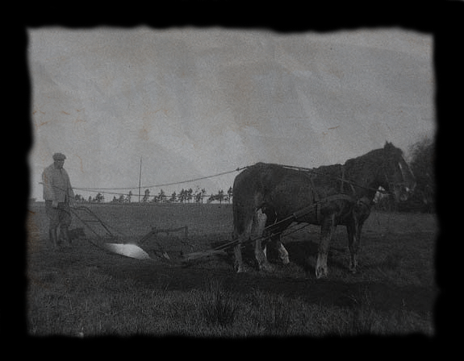

Solvognen


Solvognen måler cirka 54 cm x 35 cm x 29 cm. Hesten vejer 2640 gram, skiven 1550 gram.
Solvognen spiller en afgørende rolle i at forstå vores forfædres tilbedelse af solen, og den er et af Europas fineste og bedst bevarede kunstværker fra bronzealderen.
Stilmæssigt er solvognen forud for sin tid og med tydelige nordiske præg. Men da den efter 3.400 år dukker frem af jorden i 1902, er den lige ved at ende som legetøj.
Solens rejse over himlen var et vigtigt element i bronzealderens religion, og intet illustrerer denne rejse bedre end solvognen, hvor en guddommelig hest trækker solen over himlens bue om dagen. Solen havde også andre hjælpere på sin rejse. Om natten blev den transporteret gennem underverdenens mørke på et solskib og hjulpet på vej af mytologiske fisk, slanger og svømmefugle.

I store dele af Skandinavien viser motiver på bronzegenstande som rageknive og helleristninger solens rejse, men det fineste eksempel af dem alle er solvognen. Den er uden sidestykke det smukkeste og mest detaljerede eksempel på solens rejse, vi har i Europa.
Den spillede en helt afgørende rolle for at forstå bronzealderens religion. Ud fra den kunne Nationalmuseets bronzeekspert Flemming Kaul kunne forbinde alle bronzealderens motiver over solens fremfærd og i detaljer kortlægge dens rejse dag og nat.
Solvognen er muligvis en miniatureudgave af en solvogn i virkelig størrelse. Den kan have været en rejsemodel, da både solskive og hest kan afmonteres vognen, og den derfor er let at tage med på rejse rundt til kultiske ceremonier, hvor religiøse ledere kunne vise solens rejse ved at lade vognen rulle frem og tilbage.
Detaljerne på Solvognen er så fine, at de let overses, men for 3.400 år siden var de ’state of the art’. Ikke kun i Norden, men også på europæisk plan var solvognen forud for sin tid.
Hesten er udformet meget naturtro med sin runde form, hvilket er helt uhørt for sin tid, og samme omhu ses ved hestens hoved, hvor ører, øjne, mund og næsebor er detaljeret udført. Benene ses i let bevægelse og hestens hove er markeret. Selv røvhullet har kunstneren haft særligt øje for. Et hestehår har formentlig hængt som hale.
De brede mønster om hestens hals og bringe (bryst) er det ældste eksempel i verden på seletøj.
Under hovedet ses resterne af en løkke, der angiver et bidsel. En snor er formentlig gået fra denne og til en tilsvarende løkke på solskiven for at vise, at hesten trækker solskiven.
Oprindeligt kunne hjulene dreje rundt, så vognen kunne trækkes hen af jorden. I dag drejer kun et af hjulene.
Som en skjult skat ligger solvognen i 3.400 år begravet i jorden ved Trundholm Mose i Nordvestsjælland. Indtil en septemberdag i 1902, hvor en landmand tager marken i anvendelse og skærer sin dybe plov gennem jorden. Ploven hiver først bronzehesten op i dagslyset. Det får dog ikke landmanden til at stoppe, og på tilbagevejen pløjes også solskiven op. Landmanden vurderer, det er gammelt legetøj og giver det til sin datter på gården.
Forklædt som ”legetøj” bliver oldtidsfundet dog hurtigt et tilløbsstykke for gårdens naboer, og snart når nyheden også Nationalmuseets eksperter. Området afsøges straks systematisk med tættekam, og flere brudstykker af vognhjulene og guldbelægningen fra solskiven dukker frem af jorden.
